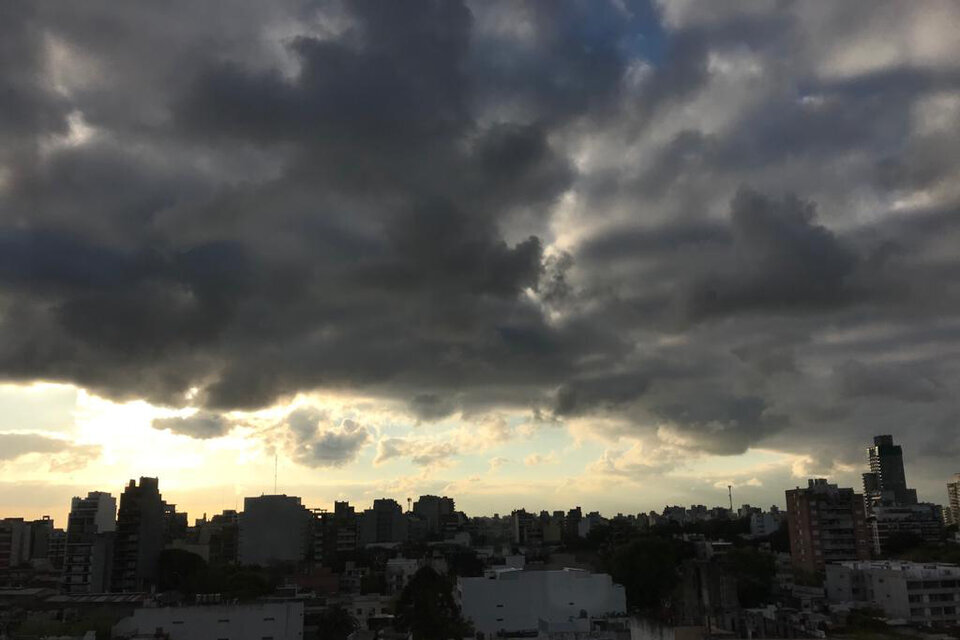

Qué está pasando con el dólar | Retrocede como moneda de reserva de los países y medio de pago del comercio internacionalUn hombre fue detenido por intentar ingresar a la exEsma | Forzó la puerta con un destornillador
Opinión | El FMI y sus huérfanos ideológicos.

Clima en Buenos Aires: el pronóstico del tiempo para este domingo 7 de mayo | Cielo mayormente nublado
MINUTO A MINUTO | Se viene una nueva edición del Superclásico y la expectativa es muy alta.La obra de Laura Kornblihtt, en el Museo Malvinas | Se inauguró la muestra "Donde caen los sueños"Cómo vivió la sociedad británica la coronación de Carlos III | Entre la pompa y la apatía, el show continúaUna persecución policial y un choque fatal: así fue la fatídica noche de la Masacre de Monte | A casi 4 años del hecho que conmocionó al país, este lunes comienza el juicio.Qué es de la vida de Diego Alonso Gómez, el actor que encarnó a “El Pollo” en “Okupas” | El artista contó qué está haciendo en la actualidad y recordó la exitosa serie del año 2000Desconfianza, apatía social y nuevas elecciones: Chile vuelve a poner en marcha la reforma constitucional | Este domingo eligen a los miembros del Consejo Constitucional